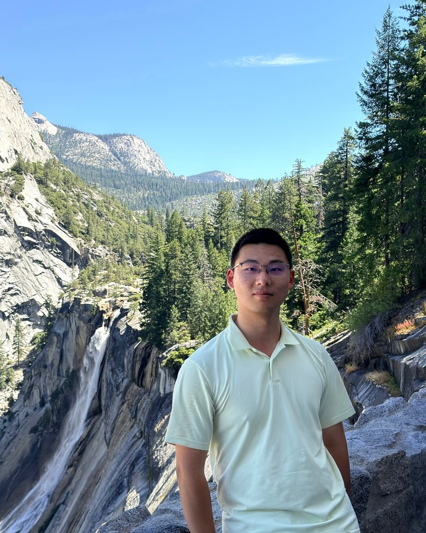

Applying to Ph.D. programs for Fall 2027
Learning the physical skills that generalist robots still lack.
I am a master's student in Computer Science at Northwestern University, working with Prof. Han Liu, Prof. Zhaoran Wang and Haoran Lu. I am also a research assistant in the Mechanical Systems Control Lab at UC Berkeley, with Dr. Wei Zhan, Prof. Masayoshi Tomizuka and Dr. Ruihai Wu. Before that, I received my B.S. in Honors Mathematics and Computer Science from the University of Michigan.
My research interests are in robot learning and dexterous manipulation: how robots acquire contact-rich physical skills, and how those skills become part of generalist robot models. My work so far covers dexterous hands, humanoid loco-manipulation, and the simulation and data behind them.
Specifically, I work on generalizable dexterous manipulation with multi-fingered hands. In-hand skills are hard to teleoperate and largely missing from robot data, so I learn them with reinforcement learning in simulation and distill them into vision-language-action models. My focus there is generalization across objects and sim-to-real transfer. Looking ahead, I want to explore the level above single skills: how agents built on foundation models can use them, and how skills can be combined to complete long-horizon tasks reliably in the real world.

News
-
First place in the Industrial Board Assembly track of the RoCo Challenge @ IROS 2026.
-
Joined the Mechanical Systems Control Lab at UC Berkeley as a research assistant.
-
Two papers are out on arXiv; see Research.
-
Started my M.S. in Computer Science at Northwestern University.
Research
* equal contributionExperience
-
Research Assistant, UC Berkeley
Jun 2026 – PresentMechanical Systems Control Lab · Dr. Wei Zhan, Prof. Masayoshi Tomizuka and Dr. Ruihai Wu
Dexterous in-hand manipulation with multi-fingered robot hands, from reinforcement learning in simulation to vision-language-action models on real hardware.
-
Research Assistant, Northwestern University
Sep 2025 – PresentWith Prof. Han Liu, Prof. Zhaoran Wang and Haoran Lu
3D asset annotation and simulation infrastructure for robot manipulation, and humanoid loco-manipulation.
Education
-
Northwestern University
2025 – 2027 (expected)M.S. in Computer Science
-
University of Michigan
2022 – 2025B.S. in Honors Mathematics and Computer Science · University Honors
-
University of North Carolina at Chapel Hill
2021 – 2022Mathematics · Dean's List